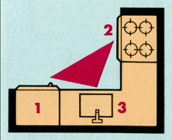
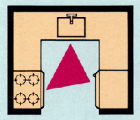
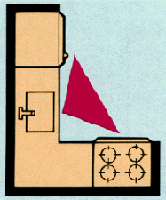
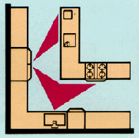
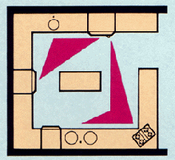
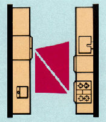
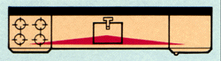

|

Understanding the basic principles of kitchen layout will help take
much of the mystery out of the design process. One of the most basic layout
principles is the work triangle. The work triangle is an
imaginary line drawn from each of the three primary work stations in the
kitchen - the food storage, preparation/cooking, and clean-up stations.
By drawing these lines, you can assess the distance required to move to
and from each area and thus determine how well the traffic will flow. To
help avoid traffic flow problems, work triangles should have a perimeter
that measures less than 26 feet.
The three primary kitchen work stations which create the work triangle
are:
1.
The food storage station - Your refrigerator and pantry are the
major items here. Cabinetry like lazy susan or swing-out pantry units add
function and convenience. Options like wine racks, spice racks, and roll-out
trays help to organize your groceries.
2. The preparation/cooking station - Your range, oven,
microwave, and smaller appliances are found in this area. Counter space
is important in this section. Conserve space by moving appliances off the
counter with appliance garage cabinets and space-saving ideas like towel
rods and pot lid racks.
3. The clean-up station - Everyone's least favorite activity
is one of the kitchen's most important - clean-up. This area is home to
the sink, waste disposal, and dishwasher. Cabinetry for this station is
designed to organize with the trash bin cabinet and roll-out tray baskets
for storage convenience.
Today's kitchens are more than just places to cook and eat meals. Many
people choose to include breakfast bars, desks, bookshelves, computer stations,
phone and message centers, and mini entertainment areas in their kitchens.
Consider adding these areas to your kitchen with our selection on desk,
shelf, bookcase, and entertainment cabinetry units.

Since the kitchen is one of the most active work areas of the home,
it is important to select the right layout to complement your lifestyle
and taste. There are five primary kitchen layout shapes - the U-Shaped,
L-Shaped, Island, G-Shaped, Corridor/Gallery, and Single Wall shapes.
After learning about the work triangle in the section "Understanding
Basic Kitchen Layout," you will now see how the work triangle functions
in each layout and the advantages each layout offers.
|  |
The U-Shaped Kitchen - Named for the "U" shape it resembles,
this kitchen is popular in large and small homes alike.
-
Perfect for families who use their kitchens a great deal
-
Provides plenty of counter space
-
Efficient work triangle
Can convert one cabinet leg into a breakfast bar
|
The L-Shaped Kitchen - This kitchen shape is one of the most
flexible and most popular, providing a compact triangle.
-
Very flexible layout design
-
Major appliances can be placed in a variety of areas
-
Work areas are close to each other
Can easily convert to a U-Shape with a cabinet leg addition
|
 |
|  |
The Island Option. Islands are extremely popular in homes
today and are most often seen in L-Shaped kitchens. Islands can not only
keep work areas traffic-free, but also create a wealth of extra counter
and storage space. An island can be an indispensable food preparation station
or act as a butcher block area. The island is also an ideal place to add
an extra sink or an island grill. |
The G-Shaped Kitchen - Built very much like the U-Shaped with
the addition of an elongated partial wall, the G-Shaped kitchen offers
a great deal of space.
-
Ideal for larger families needing extra storage space
-
Plenty of counter and cabinet space
-
Multiple cooks can function well in this layout
Can convert one cabinet leg into a breakfast bar or entertaining area
|
 |
|  |
The Corridor/Galley Kitchen - This style kitchen makes the most
out of a smaller space.
-
Great for smaller kitchens
-
Appliances are close to one another
-
Easy for one cook to maneuver
Can easily convert to a U-Shape by closing off one end
|
The Single Wall/Pullman Kitchen - Designed for homes or apartments,
the single wall kitchen offers a very open and airy feel.
-
Ideal for apartments and smaller homes
-
Works well with the open designs found in many contemporary homes
-
Small moveable table can provide eating space
Can be enhanced with the addition of an island
|
 |
|